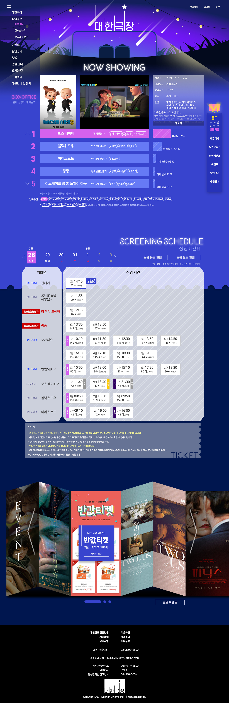

대한극장UI/UX Design
Overview
서울 도심 중앙에 루프탑 상영관을 가진 개인 영화관인 점을 강조하기 위하여 야경 일러스트 드로잉 및 씨티팝 색상을 활용하였습니다.
더블어 기존 CI 심볼도 새로운 분위기에 어울리도록 리뉴얼하여 로고제작을 하였습니다.
-
- 작업 기여도
- 개인작업 100%
-
- 작업 프로그램


Concept
- Analysis
- 옥상에 루프탑 상영관을 소유하고 있는 개인영화관입니다.
- Design Concept
- 루프탑 상영관의 이미지를 극대화하기 위하여 야경에 어울리는 씨티팝 색상을 차용하였습니다. 또한 프랜차이즈 멀티플렉스 영화관 대비 지점이 1개인 특이점을 살려, 메인페이지에 사용자가 가장 필요로하는 상영시간표를 노출하였습니다.
- Keyword
-
- # 루프탑
- # 사용성 업그레이드
- Mood Board
- Color
-
- #3844CE
- #657AF5
- #D462ED
- #00164F
- Typo
-
-
- BEON
- 에스코어드림 Regular
-
- 나눔바른고딕 Bold
- 나눔바른고딕 Medium
- 나눔바른고딕 Light
- 나눔바른고딕 ExtraLight
-
Work Process
영화관 이용 타켓의 터치포인트를 분석하고 순서에 맞게 화면을 구성하였습니다.
루프탑 키워드와 어울리는 신규 CI 심볼 제작 및 일러스트 드로잉을 하였습니다.
루프탑 키워드와 어울리는 신규 CI 심볼 제작 및 일러스트 드로잉을 하였습니다.
Output
Main Display(width * height) : 1280px * 3920px
- MainPage
- 네비게이션 햄버거바 좌측 상단 고정
- 영화명 선택 시
트랜지션 효과 및 관련 정보 노출 - 장르추천 해시태그 선택 시
해당 장르 박스오피스 노출 - 일자 선택에 따라 하단 시간표 노출
비활성화 일자 색상 변경
- 
- 우측 퀵메뉴바 고정
- 각 시간 마우스오버 시
종료예정시간 노출